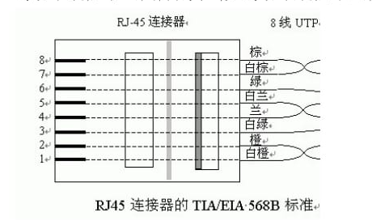
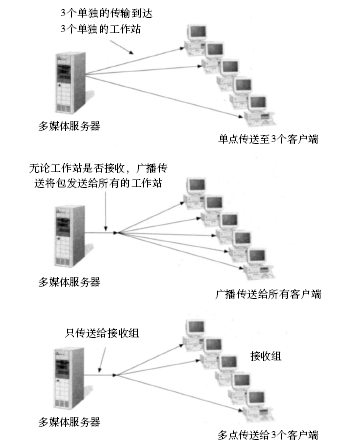

| 1. | [第二章]1000Base-T的物理拓扑为 |
| 2. | [第二章]1000Base-T的逻辑拓扑为 |
| 3. | [第四章]IPv4地址长度为比特 |
| 4. | [第四章]IPv6地址长度为比特 |
| 5. | [第二章]集线器是工作在层的网络设备（请填写七层模型的具体层次名称） |
| 6. | [第二章]网卡是工作在层的网络设备（请填写七层模型的具体层次名称） |
| 7. | [第四章]路由器是工作在层的网络设备（请填写七层模型的具体层次名称） |
| 8. | [第八章]网络设计三层模型自顶向下的最上层是 |
| 9. | [第八章]网络设计三层模型自顶向下的中间层是 |
| 10. | [第八章]网络设计三层模型自顶向下的最底层是 |
| 11. | [第二章]与虚拟局域网相关的国际标准是____。 | ||||
|
|
|||||
| 12. | [第二章]IEEE关于以太网的协议为____。 | ||||
|
|
|||||
| 13. | [第二章]IEEE 802.11a通信使用____频段。 | ||||
|
|
|||||
| 14. | [第二章]综合布线系统中，水平布线子系统一般采用____进行铺设。 | ||||
|
|
|||||
| 15. | [第三章]不属于局域网传输技术的是____。 | ||||
|
|
|||||
| 16. | [第四章]请计算12.13.14.15/16所属的网络地址，并给出该子网的广播地址、最小可用IP地址和最大可用IP地址 |
|
12.13.14.15/16 化成00001100.00001101.00001110.00001111 16为后16位，则 网络地址 后16位全为0 00001100.00001101.00000000.00000000 进制转换 12.13.0.0
广播地址 后16位全为1 00001100.00001101.11111111.11111111
进制转换 12.13.255.255 最小ip 为网络地址+1 则为 12.13.0.1 最大IP为广播地址-1 则为 12.13.255.254 |
|
| 17. | [第四章]请计算12.13.14.15/18所属的网络地址，并给出该子网的广播地址、最小可用IP地址和最大可用IP地址 |
|
12.13.14.15/18 化成00001100.00001101.00001110.00001111 18为后14位，则 网络地址 后14位全为0 00001100.00001101.00000000.00000000 进制转换 12.13.0.0 广播地址 后14位全为1 00001100.00001101.00111111.11111111 进制转换 12.13.63.255 最小ip 为网络地址+1 则为 12.13.0.1 最大IP为广播地址-1 则为 12.13.63.254 |
|
| 18. | [第四章]请计算12.13.14.15/20所属的网络地址，并给出该子网的广播地址、最小可用IP地址和最大可用IP地址 |
|
12.13.14.15/20 化成00001100.00001101.00001110.00001111 20为后12位，则 网络地址 后12位全为0 00001100.00001101.00000000.00000000 进制转换 12.13.0.0 广播地址 后12位全为1 00001100.00001101.00001111.11111111 进制转换 12.13.15.255 最小ip 为网络地址+1 则为 12.13.0.1 最大IP为广播地址-1 则为 12.13.15.254 |
|
| 19. | [第四章]请计算12.13.14.15/22所属的网络地址，并给出该子网的广播地址、最小可用IP地址和最大可用IP地址 |
|
12.13.14.15/22 化成00001100.00001101.00001110.00001111 22为后10位，则 网络地址 后10位全为0 00001100.00001101.00001100.00000000 进制转换 12.13.12.0 广播地址 后10位全为1 00001100.00001101.00001111.11111111 进制转换 12.13.15.255 最小ip 为网络地址+1 则为 12.13.12.1 最大IP为广播地址-1 则为 12.13.15.254 |
|
| 20. | [第四章]请计算12.13.14.15/24所属的网络地址，并给出该子网的广播地址、最小可用IP地址和最大可用IP地址 |
|
12.13.14.15/24 化成00001100.00001101.00001110.00001111 24为后8位，则 网络地址 后8位全为0 00001100.00001101.00001110.00000000 进制转换 12.13.14.0 广播地址 后8位全为1 00001100.00001101.00001110.11111111 进制转换 12.13.14.255 最小ip 为网络地址+1 则为 12.13.14.1 最大IP为广播地址-1 则为 12.13.14.254 |
|
| 21. | [第四章]请计算12.13.14.15/26所属的网络地址，并给出该子网的广播地址、最小可用IP地址和最大可用IP地址 |
|
12.13.14.15/26 化成00001100.00001101.00001110.00001111 26为后6位，则 网络地址 后6位全为0 00001100.00001101.00001110.00000000 进制转换 12.13.14.0 广播地址 后6位全为1 00001100.00001101.00001110.00111111 进制转换 12.13.14.63 最小ip 为网络地址+1 则为 12.13.14.1 最大IP为广播地址-1 则为 12.13.14.62 |
|
| 22. | [第四章]请计算12.13.14.15/28所属的网络地址，并给出该子网的广播地址、最小可用IP地址和最大可用IP地址 |
|
12.13.14.15/28 化成00001100.00001101.00001110.00001111 28为后4位，则 网络地址 后4位全为0 00001100.00001101.00001110.00000000 进制转换 12.13.14.0 广播地址 后4位全为1 00001100.00001101.00001110.00001111 进制转换 12.13.14.15 最小ip 为网络地址+1 则为 12.13.14.1 最大IP为广播地址-1 则为 12.13.14.14 |
|
| 23. | [第四章]请计算12.13.14.15/30所属的网络地址，并给出该子网的广播地址、最小可用IP地址和最大可用IP地址 |
|
12.13.14.15/30 化成00001100.00001101.00001110.00001111 30为后2位，则 网络地址 后2位全为0 00001100.00001101.00001110.00001100 进制转换 12.13.14.12 广播地址 后2位全为1 00001100.00001101.00001110.00001111 进制转换 12.13.14.15 最小ip 为网络地址+1 则为 12.13.14.13 最大IP为广播地址-1 则为 12.13.14.14 |
|
| 24. | [第四章]请按照路由汇聚的方式对下列子网进行合并： 192.168.1.0/26 192.168.1.64/26 192.168.1.128/26 192.168.1.192/26 |
|
192.168.1.0/26 11000000.10101000.00000001.00000000 / 26 192.168.1.64/26 11000000.10101000.00000001.01000000 / 26 192.168.1.128/26 11000000.10101000.00000001.10000000 / 26 192.168.1.192/26 11000000.10101000.00000001.11000000 / 26
我们通过查看它们的二进制形式可以发现,它们的前24位是一样的,所以,我们就可以将网络位在原有基础上后退2位变成24，那么
11000000.10101000.00000001.00000000 / 24 11000000.10101000.00000001.00000000 / 24 11000000.10101000.00000001.00000000 / 24 11000000.10101000.00000001.00000000 / 24
则合并后为： 192.168.1.0/24 |
|
| 25. | [第四章]请按照路由汇聚的方式对下列子网进行合并： 192.168.1.32/28 192.168.1.48/28 192.168.1.64/28 192.168.1.80/28 |
|
192.168.1.32/28 11000000.10101000.00000001.00100000 / 28 192.168.1.48/28 11000000.10101000.00000001.00110000 / 28 192.168.1.64/28 11000000.10101000.00000001.01000000 / 28 192.168.1.80/28 11000000.10101000.00000001.01010000 / 28
我们通过查看它们的二进制形式可以发现,前两个前27位一样，后两个前27位一样，则全部提前一位为27，则合并后成两个
11000000.10101000.00000001.00100000 / 27 11000000.10101000.00000001.00100000 / 27 11000000.10101000.00000001.01000000 / 27 11000000.10101000.00000001.01000000 / 27
则合并后为： 192.168.1.32/27 192.168.1.64/27 |
|
| 26. | [第四章]请按照路由汇聚的方式对下列子网进行合并： 192.168.1.48/28 192.168.1.64/28 192.168.1.80/28 192.168.1.96/28 |
|
192.168.1.48/28 11000000.10101000.00000001.00110000 / 28 192.168.1.64/28 11000000.10101000.00000001.01000000 / 28 192.168.1.80/28 11000000.10101000.00000001.01010000 / 28 192.168.1.96/28 11000000.10101000.00000001.01100000 / 28
我们通过查看它们的二进制形式可以发现,中间两个的前27位是一样的，所有中间两个提前一位网路位置为27，则合并后
11000000.10101000.00000001.00110000 / 28 11000000.10101000.00000001.01000000 / 27 11000000.10101000.00000001.01000000 / 27 11000000.10101000.00000001.01100000 / 28
则合并后为： 192.168.1.48/28 192.168.1.64/27
192.168.1.96/28 |
|
| 27. | [第四章]请按照路由汇聚的方式对下列子网进行合并： 192.168.1.64/28 192.168.1.80/28 192.168.1.96/28 192.168.1.112/28 |
|
192.168.1.64/28 11000000.10101000.00000001.01000000 / 28 192.168.1.80/28 11000000.10101000.00000001.01010000 / 28 192.168.1.96/28 11000000.10101000.00000001.01100000 / 28 192.168.1.112/28 11000000.10101000.00000001.01110000 / 28
我们通过查看它们的二进制形式可以发现,它们的前26位是一样的,所以,我们就可以将网络位在原有基础上后退2位变成26，那么
11000000.10101000.00000001.01000000 / 26 11000000.10101000.00000001.01000000 / 26 11000000.10101000.00000001.01000000 / 26 11000000.10101000.00000001.01000000 / 26
则合并后为： 192.168.1.64/26 |
|
| 28. | [第四章]请按照路由汇聚的方式对下列子网进行合并： 172.16.128.0/20 172.16.144.0/20 172.16.160.0/20 172.16.176.0/20 |
|
172.16.128.0/20 10101100.00010000.10000000.00000000 / 20 172.16.144.0/20 10101100.00010000.10010000.00000000 / 20 172.16.160.0/20 10101100.00010000.10100000.00000000 / 20 172.16.176.0/20 10101100.00010000.10110000.00000000 / 20
我们通过查看它们的二进制形式可以发现,它们的前18位是一样的,所以,我们就可以将网络位在原有基础上后退2位变成18，那么
10101100.00010000.10000000.00000000 / 18 10101100.00010000.10000000.00000000 /18 10101100.00010000.10000000.00000000 / 18 10101100.00010000.10000000.00000000 / 18
则合并后为： 172.16.128.0/18 |
|
| 29. | [第四章]请按照路由汇聚的方式对下列子网进行合并： 172.16.0.0/18 172.16.64.0/18 172.16.128.0/18 172.16.192.0/18 |
|
172.16.0.0/18 10101100.00010000.00000000.00000000 / 18 172.16.64.0/18 10101100.00010000.01000000.00000000 / 18 172.16.128.0/18 10101100.00010000.10000000.00000000 / 18 172.16.192.0/18 10101100.00010000.11000000.00000000 / 18
我们通过查看它们的二进制形式可以发现,它们的前16位是一样的,所以,我们就可以将网络位在原有基础上后退2位变成16，那么
10101100.00010000.00000000.00000000 / 16 10101100.00010000.00000000.00000000 / 16 10101100.00010000.00000000.00000000 / 16 10101100.00010000.00000000.00000000 / 16
则合并后为： 172.16.0.0/16 |
|
| 30. | [第四章]请按照路由汇聚的方式对下列子网进行合并： 172.16.192.0/24 172.16.193.0/24 172.16.194.0/24 172.16.195.0/24 |
|
172.16.192.0/24 10101100.00010000.11000000.00000000 / 24 172.16.193.0/24 10101100.00010000.11000001.00000000 / 24 172.16.194.0/24 10101100.00010000.11000010.00000000 /24 172.16.195.0/24 10101100.00010000.11000011.00000000 / 24
我们通过查看它们的二进制形式可以发现,它们的前22位是一样的,所以,我们就可以将网络位在原有基础上后退2位变成22，那么
10101100.00010000.11000000.00000000 / 22 10101100.00010000.11000000.00000000 / 22 10101100.00010000.11000000.00000000 /22 10101100.00010000.11000000.00000000 / 22
则合并后为： 172.16.192.0/22 |
|
| 31. | [第二章]IEEE 802.11有关54Mbps以下传输速度标准有哪几种？请分别作出简要说明。 |
|
IEEE 802.11是1997年发布的无线局域网标准 允许在2.4GHz的ISM波段传输1 Mbps和2 Mbps 支持DSSS，FHSS和红外传输
IEEE 802.11b是IEEE 802.11协议的一个扩展 允许在2.4 GHz频带上传输5.5 Mbps和11 Mbps IEEE 802.11b协议只支持DSSS IEEE 802.11b向下兼容IEEE 802.11的DSSS系统 IEEE 802.11a是IEEE 802.11协议的一个扩展 在5 GHz频带上采用正交频分复用OFDM 最高传输54Mbps 不能向下兼容IEEE 802.11和IEEE 802.11b IEEE 802.11g是IEEE 802.11协议中的一个扩展 在2.4 GHz频带上最高传输54Mbps 向下兼容现在的IEEE 802.11b 是IEEE 802.11b一个很好的平滑升级协议标准 |
|
| 32. | [第二章]简单描述无屏蔽双绞线的特点及用途，画出EIA/TIA-568B标准的RJ-45接口连接示图，并简要说明线序。 |
|
无屏蔽双绞线是一种由四对线路组成的传输介质，每一对线路之间都是绝缘的；无屏蔽双绞线作网络传输介质时阻抗是100 欧姆；无屏蔽双绞线主要是靠线路的绞合来减少EMI和RFI产生的讯号干扰和衰减；无屏蔽双绞线比其他网络传输介质容易发生电子噪音和电子干扰； RJ-45连接说明第一线对：蓝色线对，位于第4和5针第二线对：橙色线对，位于第1和2针第三线对：绿色线对，位于第3和6针第四线对：棕色线对，位于第7和8针  |
|
| 33. | [第二章]简单说明交换机的两种转发方式 |
|
1存储转发交换方式 接收到帧后选缓存，接到下一个帧再转发到目的端口 2，直通交换方式 收到帧直接查询mac地址，找到目的端口立马转发 |
|
| 34. | [第八章]简单描述网络层次化设计的优点，说明网络设计的三层模型各层应实现的功能。 |
|
接入层 供工作群组和用户访问网络 核心层的功能主要是实现骨干网络之间的优化传输，核心层通常都是以 WAN的模式来执行的，需要冗余路径，网络可以承受个别的线路中断而继续运作。路由协议的负载分发和快速收敛亦是很重要的设计功能。如何在核心层中有效利用带宽是核心层考虑的重要因素 分发层/汇聚层连接接入层和核心层，为接入层提供边界定义，负责处理数据报。分发层包含多种功能：地址或区域聚集、对核心层的部门或工作群组访问、广播/多点广播领域定义、VLAN路径选择、安全等。 访问层/接入层是区域用户被允许进入网络的接入点。这一层也可以利用访问控制列表，进一步将一组特殊用户的需求最佳化。
|
|
| 35. | [第八章]请说明单播、广播和组播的概念和特点；以视频流转播服务器为例，画图说明不同传播方式；分析不同传播方式对网络带宽的需求。 |
|
1.单播在单点传送中，每个包的副本都可发送到请求使用多媒体的目标上。 例如，如果有4个工作站请求一应用程序，那么包的4个副本将分别发送到各个工作站上。 单点传送无须特殊的网络协议，因此开发起来要相对容易一些。 由于发送端给每个要接收应用的工作站都发送一个包，所以单点传送中的信息流量是点到点的
2.广播在广播传送中，每个帧的副本都将发送往网络的每个结点，无论工作站是否请求了该应用程序。 例如，如果网络上有100个工作站，那么发送端计算机发出的包将被集线器、交换机、网桥和路由器复制到100个位置上。 如果网络包括着网桥、交换机或路由器，控制广播信息流量的一种方法就是创建过滤装置来限制广播包的传输。 因为在广播传送中，发送端计算机会将广播的包传送到所有的点，因此广播传送是多点信息流量的典型例子
3.组播组播传送是多点信息流量的另一个例子，发送端将使用一个包来传送到所有客户端。 组播传送给请求多媒体应用的工作站创建组结合MAC和IP编址，它将指向一个或多个组的包发送出去组由MAC和IP编址来标识，只有请求了应用的组内的工作站才有组播传送的可能 如果应用程序是根据单点传送设计的，那么服务器传送带宽为1.5Mbps与客户端数量的乘积，例如对5个客户端而言，就是7.5Mbps； 使用广播传送，无论是否有客户端需要接收，网络都会向所有端口进行转发，对带宽的消耗很大； 组播传送时，不管有多少客户端，服务器端只需要发送1份数据拷贝，因此对于上面的例子而言，服务器端带宽就是1.5Mbps
 |
|